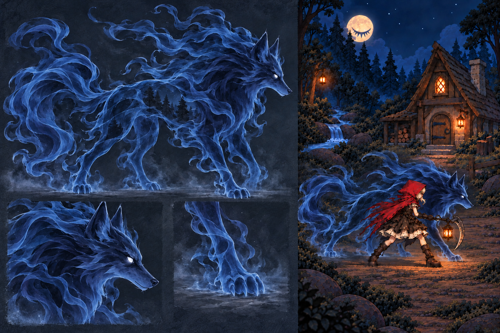
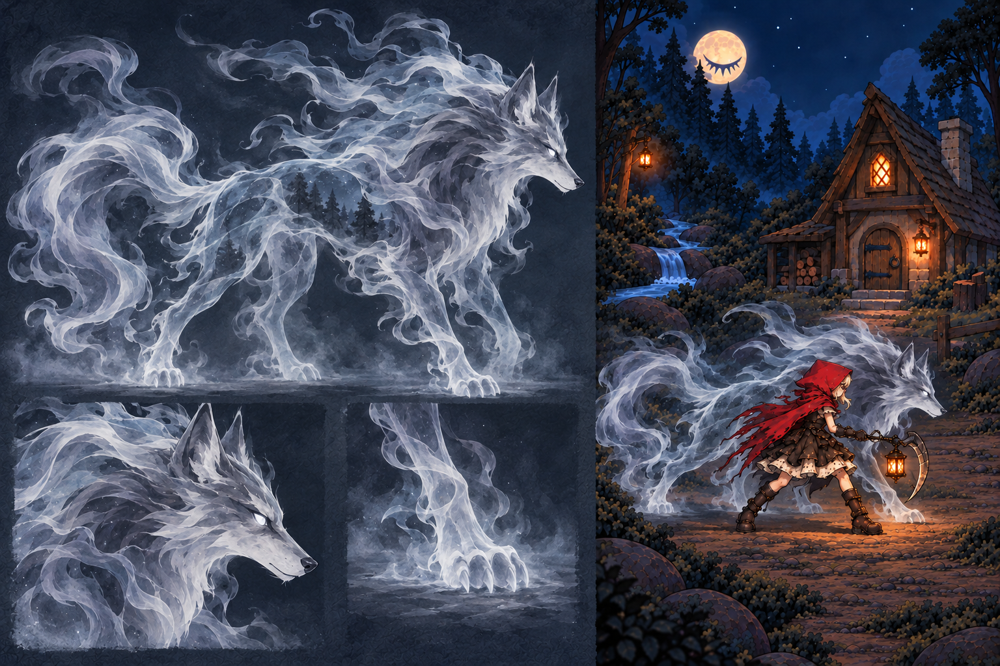
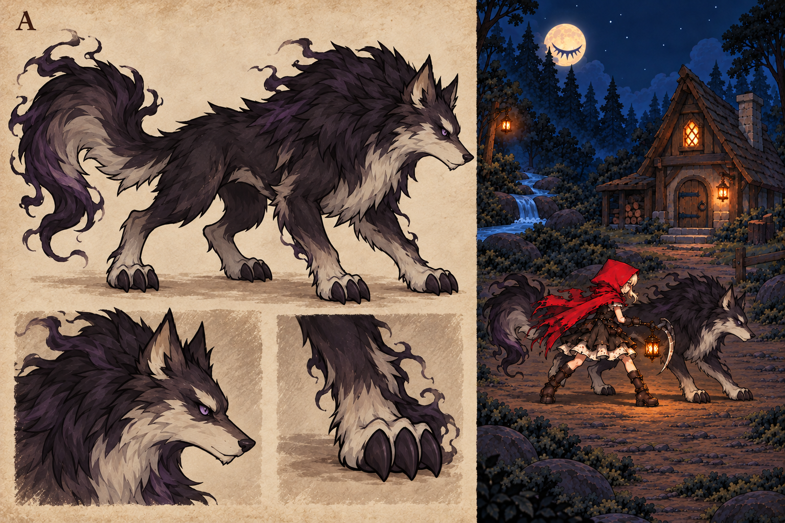
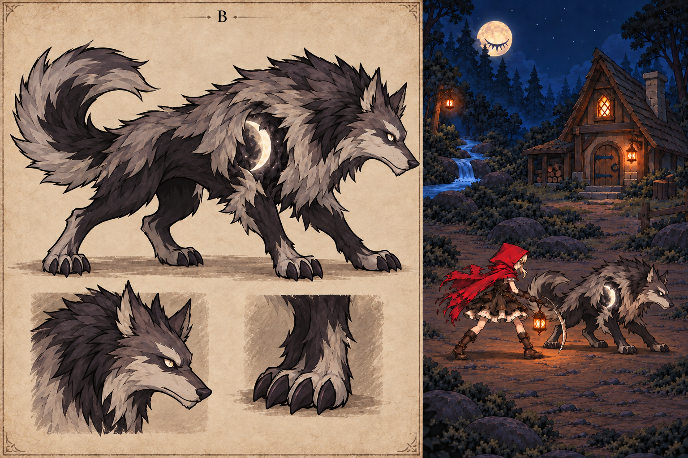
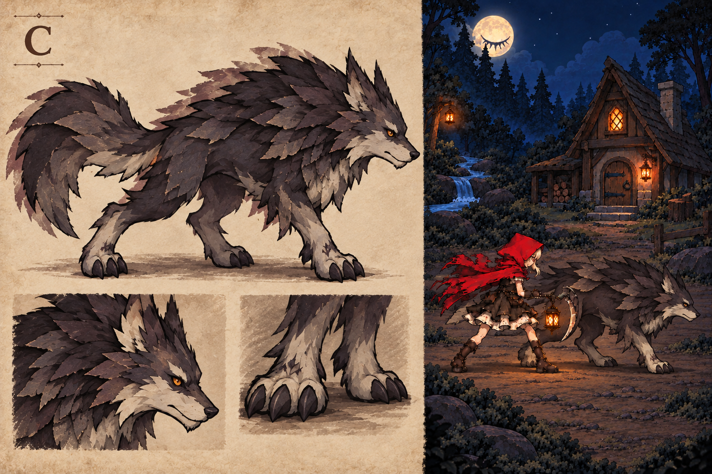

V3 · 深蓝幽灵狼（当前待确认）
深蓝灵体、冷蓝雾边、白色幽瞳。保留半透明与雾化结构，仅作配色尝试。

V2：银灰半透明灵体，白瞳、雾化四肢与流动尾雾。前版配色对照。
概念效果图，非 Unity 实景或可直接使用的透明贴图。正式制作需要真实透明分件与独立雾效；伙伴体量会再按实战校准。
深蓝灵体、冷蓝雾边、白色幽瞳。保留半透明与雾化结构，仅作配色尝试。


实体黑绒与影雾尾端，护主感最强。

灰白空壳与幽光内腔，诡异感最强。

层叠纸片与错位阴影，童话书质感最强。
